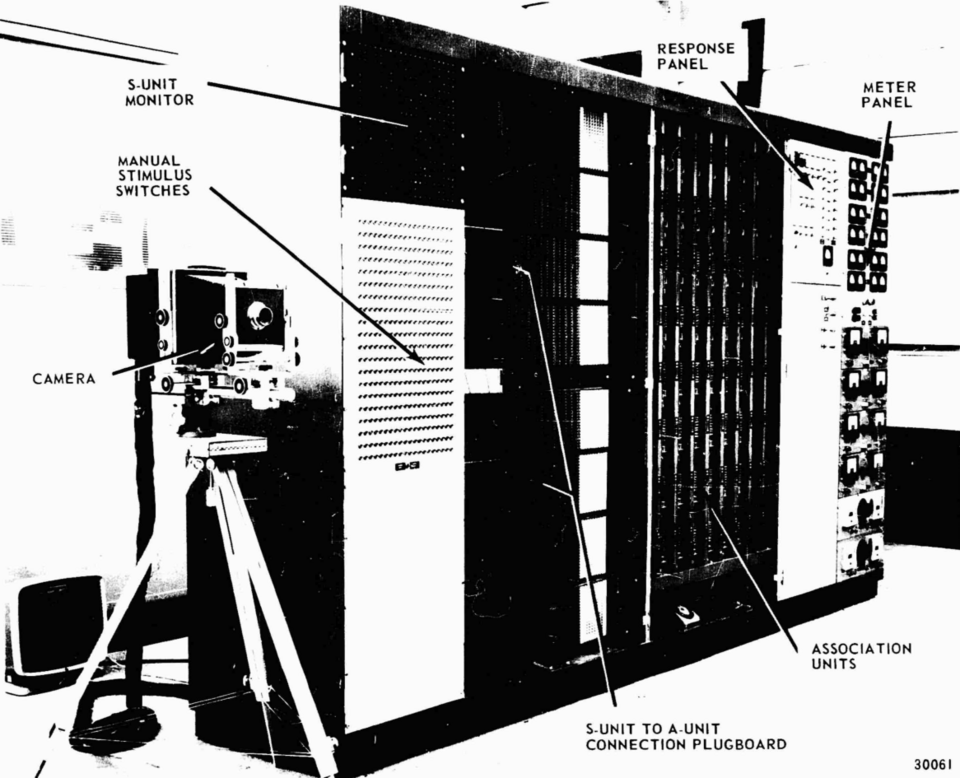
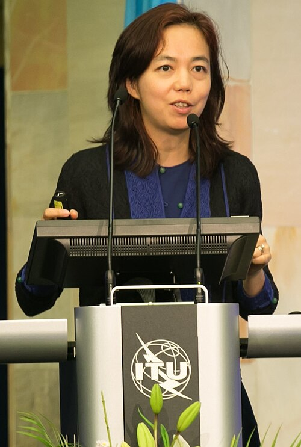
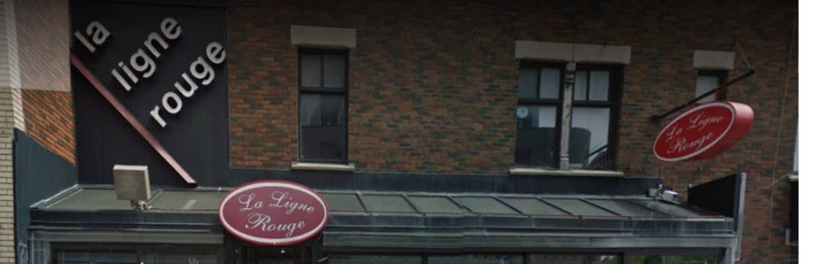
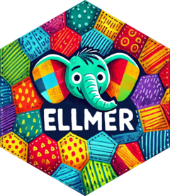
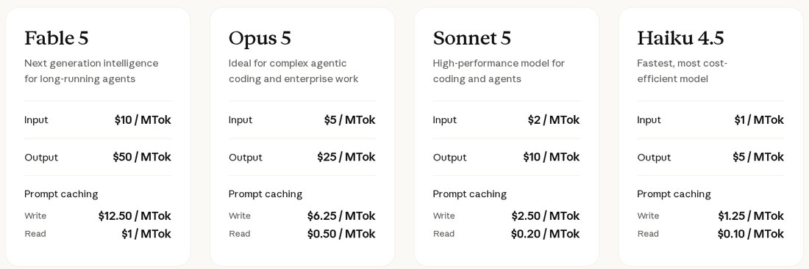

L'IA en recherche
Parcours L'intelligence artificielle et la recherche
EIOM 2026
À propos de moi
Laurence-Olivier M. Foisy
- Enseignement du cours Introduction aux mégadonnées en sciences socialesUniversité de Montréal · FAS-1001
- Doctorat en science politique, en coursUniversité Laval
- Maîtrise en études de la paix internationaleUniversité Soka, Japon
- Baccalauréat en études est-asiatiquesUniversité de Montréal

Cinq séances
lundi
Introduction aux LLM
mardi
Validation scientifique
mercredi
Des sorties aux mesures
jeudi
IA agentique
vendredi
Visite et atelier
Plan de la session
- Comment fonctionne un LLM
- Pourquoi l’API
- Premier appel sur de vraies données
- Conception de prompts
Deux questions
- Quel est votre niveau de compétence avec l'IA ?
- Qui paie pour un service d'IA ?
Qu’est-ce que l’IA ?
Il y a plusieurs définitions de l'IA
- A Est-ce que le système peut décider et agir ? Russell et Norvig 2020
- B Est-ce que le système peut passer pour un humain ? Turing 1950
- C Est-ce que le système décide par la logique ? Jordan et Mitchell 2015
Aucun consensus : beaucoup plus de définitions recensées. Legg et Hutter 2007 Wang 2019
Les grands modèles de langue répondent aux trois
- A Ils décident et agissent
- B Ils passent pour des humains Jones et Bergen 2025
- C Ils prédisent le prochain jeton par la statistique
Histoire de l'IA

1950
Le jeu de l’imitation
Turing
Computing Machinery and Intelligence Turing 1950

1956
Le terme est forgé
Dartmouth
A Proposal for the Dartmouth Summer Research Project on Artificial Intelligence McCarthy et al. 1955

1958
Le perceptron
Rosenblatt

1997
Deep Blue bat Kasparov
IBM

2003
Premier modèle de langue neuronal
Bengio · Montréal
A Neural Probabilistic Language Model Bengio et al. 2003

2009
ImageNet
Fei-Fei Li
2012
AlexNet
Krizhevsky · Sutskever · Hinton
ImageNet Classification with Deep Convolutional Neural Networks Krizhevsky et al. 2012
2014
Google achète DeepMind
2015
Le mécanisme d’attention
Bahdanau · Cho · Bengio
Neural Machine Translation by Jointly Learning to Align and Translate Bahdanau et al. 2015
2016
AlphaGo bat Lee Sedol
Hassabis
2017
Le transformer
Vaswani et al. · Google
Attention Is All You Need Vaswani et al. 2017
2018
GPT-1
2019
GPT-2
2020
GPT-3
175 milliards de paramètres
Language Models are Few-Shot Learners Brown et al. 2020
2021
Anthropic est fondée
2022
ChatGPT
30 novembre
2023
GPT-4 et Claude
mars
2024
Deux prix Nobel
Hinton · Hassabis
2025
LawZero
Bengio · Montréal
Arbre généalogique de l'IA
Schéma original, inspiré de l’arbre évolutif des LLM de Yang et al. 2023.
Comment fonctionne
un modèle de langage
Les données d'entraînement
Parts et époques : corpus d'entraînement de LLaMA, tableau 1 Touvron et al. 2023. Sites les plus représentés de C4 Dodge et al. 2021.
Tout ce qu'il fait, c'est prédire le jeton suivant
Décris l'hiver à Québec en une phrase courte.
Le modèle ne connaît que ce texte. Il doit produire le jeton suivant.
Le modèle ne voit pas des mots
La phrase qu'il vient d'écrire, telle qu'il l'a vue :
Même contenu, +56 % de jetons en français.
Le surcoût vaut pour toutes les langues éloignées de l'anglais, et la qualité y baisse aussi Ahia et al. 2023.
Ce n'est pas une base de connaissances
UNE BASE DE DONNÉES
- trouvéle fait, à l'identique
- rien trouvé« je n'ai pas »
Deux issues possibles.
UN MODÈLE DE LANGAGE
- toujoursquelque chose de plausible
- —cette branche n'existe pas
Une seule issue possible.
Une référence bibliographique produite par un modèle est une hypothèse de référence jusqu'à ce que vous l'ayez vérifiée dans un catalogue. Le principe à retenir
Un poids, c'est la force d'un lien
Un poids, c'est la force d'un lien entre deux neurones. Épais s'il compte, mince sinon ; bleu s'il pousse, gris s'il retient.
Les 32 traits de ce dessin sont 32 vrais poids, lus dans le fichier de Qwen2.5-0.5B. Le modèle en a 494 032 768.
Poids réels de q_proj, couche 0, lus dans le fichier model.safetensors de Qwen2.5-0.5B. Modèle ouvert : on peut le télécharger et tout lister.
L'hallucination n'est pas un bug
Sortie contrainte · vérification externe · validation sur vérité terrain — le programme de la semaine.
Les biais
Le biais entre à trois endroits
Deux tiers du corpus sont un balayage du web
Des humains écrivent les réponses exemplaires, puis les classent
L’optimisation retient la régularité majoritaire
Il porte les trois.
Aucune étape suivante ne corrige la précédente.
Composition du corpus d'entraînement de LLaMA Touvron et al. 2023.
Pause
Pendant la pause, allez chercher votre clé.
- aistudio.google.com/apikeyun compte Google suffit · aucune carte de crédit
Pourquoi ne pas utiliser le chat classique
mais l'API ?
Un API, c'est une adresse à qui on écrit
Le modèle ne s'installe pas sur votre poste. Votre script lui envoie du texte ; il en renvoie. Un API, c'est ce point d'entrée : une adresse à qui on écrit, et qui répond.
Les LLMs sont tangibles

- 100 000 GPU dans un seul bâtiment, à Memphis
- 34 841 foyers autant d’électricité que ce nombre de foyers québécois, sur une année
- 35 turbines à gaz brûlées sur place pour l’alimenter
- 700 000 litres d’eau douce évaporés pour entraîner GPT-3
Colossus, à Memphis : nombre de GPU NVIDIA 2024, turbines TechCrunch 2025. Équivalent en foyers calculé d'après la fiche technique du H100 SXM et la consommation résidentielle moyenne d'Hydro-Québec. Eau Li et al. 2023.
Chat vs API
DANS UNE FENÊTRE DE CLAVARDAGE
la requête grossit à chaque tour
- appel 1 systèmemsg 1
- appel 2 systèmemsg 1réponse 1msg 2
- appel 3 systèmemsg 1réponse 1msg 2réponse 2msg 3
La réponse dépend de tout ce qui précède.
PAR L'API
chaque appel repart à neuf
- appel 1 consignedocument 1
- appel 2 consignedocument 2
- appel 3 consignedocument 3
Trois appels de même forme, trois réponses comparables.
Ce que l'API rend possible
- modèle
- température
- prompt
- données
- log
- coût
aucune de ces valeurs n'est exposée
- modèle
- gemini-3.5-flash
- température
- 0
- prompt
- enregistré dans un script
- données
- sauvegardées et accessibles
- log
- un fichier par exécution
- coût
- au jeton, par appel
tout cela s'écrit dans votre méthodologie
La température
« Décris l'hiver à Québec en une phrase courte. » — le jeton suivant
- L 100
- 0
- Un 0
- F 0
- " 0
- L 61
- 14
- Un 10
- F 9
- " 7
- L 37
- 19
- Un 16
- F 15
- " 13
Zéro rend les sorties plus stables, jamais déterministes : le calcul en virgule flottante et le routage entre serveurs laissent une variation résiduelle.
Premier appel,
sur de vraies données
De la réponse en texte libre à la variable exploitable.
La Ligne Rouge

Très bon la poutine viande!
Comme dans le temps . Merci d’être de retour . Toujours aussi bon
Food is good but the man taking orders is very rude .
Bonne nourriture. Mais le staff n'est pas toujours accueillant.
looks better than it tastes
One of the worst poutine I've ever had. Cook your fries more
Avant : Utilisation de dictionnaires
| ligne | review_text | review_rating | score |
|---|---|---|---|
| 7 | Très bon la poutine viande! | 5 | -1.00 |
| 442 | The poutine is awful....thanks god it was a small portion. | 2 | -0.33 |
| 259 | Bonne nourriture. Mais le staff n'est pas toujours accueillant. | 3 | indéfini |
| … | 548 autres lignes | … |
for (i in seq_len(nrow(donnees))) { ... }Maintenant : Utilisation de LLMs
| ligne | review_text | review_rating | score |
|---|---|---|---|
| 7 | Très bon la poutine viande! | 5 | +0.85 |
| 442 | The poutine is awful....thanks god it was a small portion. | 2 | -0.85 |
| 259 | Bonne nourriture. Mais le staff n'est pas toujours accueillant. | 3 | +0.20 |
| … | 548 autres lignes | … |
for (i in seq_len(nrow(donnees))) { ... }On ne change pas la donnée, on change la consigne
« Excellents gyros. Bien sûr, le service est raide, c'est fermé pour on ne sait pas quoi, mais on s'en fout. On n'est pas à Saint-Lambert, pas besoin de courbettes. Amenez votre monnaie papier. »
{"score":0.65}{"niveau":3,"scolarite":"collège"}{"n":0,"fautes":[]}{"themes":["nourriture","service","horaire","paiement"]}{"retour":"oui","confiance":0.9}{"registre":"familier","ironie":false}Une seule donnée, six questions. Le dictionnaire n'en savait poser qu'une.
Six appels réels à gemini-3.5-flash-lite, température 0, sortie JSON imposée.

ellmer
Un package R pour parler aux modèles de langage.
- Vingt-trois fournisseurs, une seule syntaxe
- Changer de modèle tient sur une ligne
- Maintenu par l'équipe de tidyverse
install.packages("ellmer")
chat_openrouter(model = "google/gemini-3.5-flash-lite")
chat_google_gemini(model = "gemini-3.5-flash")
chat_openai(model = "gpt-4o-mini")
chat_anthropic(model = "claude-sonnet-5")
chat_ollama(model = "gemma3") # sur VOTRE machinePoser une question, obtenir du texte
library(ellmer)
chat <- chat_openrouter(
model = "google/gemini-3.5-flash-lite",
echo = "none"
)
chat$chat("Quelle est la capitale de la France ?")
#> La capitale de la France est **Paris**.Le même geste, sur un vecteur
library(ellmer)
library(jsonlite)
pays <- c("France", "Japon", "Bresil")
capitales <- character(length(pays))
for (i in seq_along(pays)) {
prompt <- paste0(
"Quelle est la capitale de ", pays[i], " ? ",
'Reponds uniquement par {"capitale": "..."}'
)
chat <- chat_openrouter(model = "google/gemini-3.5-flash-lite", echo = "none")
reponse <- chat$chat(prompt)
capitales[i] <- fromJSON(reponse)$capitale
}
data.frame(pays, capitales)
#> pays capitales
#> 1 France Paris
#> 2 Japon Tokyo
#> 3 Bresil BrasiliaComment choisir son modèle ?
- openai93
- qwen51
- google41
- anthropic28
- mistralai19
- … 55 autres fournisseurs
- Combien ça coûtede 0,01 $ à 150 $ le million de jetons — un facteur 15 000
- Où passent les donnéeschez le fournisseur, ou sur votre machine si le modèle est ouvert
- Le modèle est-il épinglableun nom de version qui ne bougera pas, sinon la reproductibilité tombe
- Fait-il la tâchela seule réponse valable vient d’une comparaison sur VOTRE corpus
Catalogue OpenRouter relevé le 24 août 2026.
Comment interpréter le coût

Les 551 avis de La Ligne Rouge, classés une fois
- Haiku 4.5 7,6 ¢
- Sonnet 5 15,1 ¢
- Opus 5 37,8 ¢
- Fable 5 75,6 ¢
- 17 235jetons — les avis
- 25 346jetons — la consigne, renvoyée 551 fois
La consigne coûte plus cher que les données. Elle repart entière à chaque appel.
Tarifs relevés sur anthropic.com/pricing le 24 août 2026. Jetons comptés sur les 551 avis réels du corpus; les prix d'Anthropic s'appliquent à leur propre tokeniseur, l'ordre de grandeur tient.
LM Arena
- 1 Vous posez une question la vôtre, n’importe laquelle
- 2 Deux modèles répondent anonymes, tirés au hasard
- 3 Vous votez A, B, égalité, ou les deux mauvais
- 4 Les noms sont révélés après le vote, jamais avant
Un classement à la Elo, calculé sur des centaines de milliers de duels. Plus de 240 000 votes dès la publication de la méthode.
Ce que le public préfère sur des questions quelconques. Pas la justesse sur votre corpus, ni sur votre tâche. Un modèle premier au classement peut être mauvais chez vous.
Méthode et volume de votes Chiang et al. 2024.
La clé se dépose dans .Renviron
# Dans la console R
usethis::edit_r_environ()
# Le fichier s'ouvre. On y ajoute UNE des deux lignes:
GEMINI_API_KEY=votre_cle_ici
# OU
OPENROUTER_API_KEY=votre_cle_ici
# Puis: Session > Restart R
# Sans redemarrage, R ne verra rien.Jamais
Jamais dans un script. Jamais dans un dépôt Git. Jamais dans une capture d'écran de diapositive.
D'abord un échantillon, ensuite tout le corpus
SUR UN ÉCHANTILLON
5 lignes
On lit les cinq sorties à l'œil. On corrige le prompt.
SUR TOUT LE CORPUS
551 lignes
Une fois seulement, et sans surveillance.
Concevoir un prompt
Puis passage de relais à la séance 2.
Rôle → Tâche → Contraintes → Format
Avec la sortie structurée, le format se règle tout seul : le schéma est le format.
Le même besoin, deux prompts
Analyse ce texte et dis-moi ce que tu en penses.
Aucun critère, aucun format. La sortie change à chaque appel.
Tu codes des avis de restaurant pour une recherche en sciences sociales. Attribue la note en étoiles que l'auteur a le plus vraisemblablement laissée. Fonde-toi sur le jugement global, pas sur le nombre de mots positifs. Réponds selon le schéma fourni.
Rôle, tâche, critère de décision, format. Les quatre y sont.
Demandez à l'IA d'écrire le prompt
Ce que vous écrivez
« Je veux classer des avis de restaurant sur une échelle de −1 à +1. Écris-moi le prompt système qui fera ça, avec un format de sortie strict. »
Ce que vous obtenez
Un prompt mieux structuré que le vôtre, en quelques secondes. Vous le lisez, vous le corrigez, vous le gardez dans votre script.
La précision du modèle n'est pas toujours la bonne mesure
Une maladie qui touche 1 % des gens. Un modèle brisé répond « non » à tout le monde.
D'autres mesures existent pour ce genre de situation. Vous les verrez avec Antoine.
Confidentialité des données
Règles de l'API relevées dans la documentation d'OpenAI le 24 août 2026. Les modèles ouverts et leurs enjeux : avec Antoine, plus tard cette semaine.
Et maintenant ?
- Comment valider un modèle ?
- Quels scores utiliser ?
- Est-ce que la précision est toujours bonne ?
Demain et mercredi, Antoine Lemor vous montrera comment valider un modèle et quels scores utiliser.
Merci
Sources
- A. M. Turing, Computing Machinery and Intelligence. Mind, LIX(236), 433–460
- J. McCarthy, M. Minsky, N. Rochester, C. Shannon, A Proposal for the Dartmouth Summer Research Project on Artificial Intelligence. Réimprimé dans AI Magazine, 27(4), 2006
- Y. Bengio, R. Ducharme, P. Vincent, C. Jauvin, A Neural Probabilistic Language Model. Journal of Machine Learning Research, 3, 1137–1155
- S. Legg, M. Hutter, A Collection of Definitions of Intelligence. Advances in Artificial General Intelligence · arXiv:0706.3639
- A. Krizhevsky, I. Sutskever, G. E. Hinton, ImageNet Classification with Deep Convolutional Neural Networks. NIPS 2012
- D. Bahdanau, K. Cho, Y. Bengio, Neural Machine Translation by Jointly Learning to Align and Translate. ICLR 2015 · arXiv:1409.0473
- M. I. Jordan, T. M. Mitchell, Machine learning: Trends, perspectives, and prospects. Science, 349(6245), 255–260
- A. Vaswani, N. Shazeer, N. Parmar et al., Attention Is All You Need. NeurIPS 2017 · arXiv:1706.03762
- M. Zeff, xAI gets permits for 15 natural gas generators at Memphis data center. TechCrunch, 3 juillet 2025 · permis pour 15 turbines, jusqu’à 35 en service sans permis
- NVIDIA, NVIDIA Ethernet Networking Accelerates World's Largest AI Supercomputer, Built by xAI. nvidianews.nvidia.com · Colossus, Memphis : 100 000 GPU Hopper, bâti en 122 jours
- P. Li, J. Yang, M. A. Islam, S. Ren, Making AI Less "Thirsty": Uncovering and Addressing the Secret Water Footprint of AI Models. arXiv:2304.03271 · 700 000 litres évaporés pour l'entraînement de GPT-3
- W.-L. Chiang, L. Zheng, Y. Sheng et al., Chatbot Arena: An Open Platform for Evaluating LLMs by Human Preference. arXiv:2403.04132 · plus de 240 000 votes appariés
- J. Dodge, M. Sap, A. Marasović et al., Documenting Large Webtext Corpora: A Case Study on the Colossal Clean Crawled Corpus. EMNLP 2021, p. 1286-1305 · sites les plus représentés de C4, figure 2
- O. Ahia, S. Kumar, H. Gonen et al., Do All Languages Cost the Same? Tokenization in the Era of Commercial Language Models. EMNLP 2023, p. 9904-9923 · surcoût de tokenisation et qualité moindre
- H. Touvron, T. Lavril, G. Izacard et al., LLaMA: Open and Efficient Foundation Language Models. arXiv:2302.13971 · composition du corpus, tableau 1
- P. Wang, On Defining Artificial Intelligence. Journal of Artificial General Intelligence, 10(2)
- S. Russell, P. Norvig, Artificial Intelligence: A Modern Approach. 4ᵉ édition, Pearson
- T. B. Brown, B. Mann, N. Ryder et al., Language Models are Few-Shot Learners. NeurIPS 2020 · arXiv:2005.14165
- J. Yang, H. Jin, R. Tang et al., Harnessing the Power of LLMs in Practice: A Survey on ChatGPT and Beyond. arXiv:2304.13712 · arbre évolutif des LLM
- C. R. Jones, B. K. Bergen, Large Language Models Pass the Turing Test. arXiv:2503.23674
Images d'archives, Wikimedia Commons : Anthropic (Capture de la page de tarification publique, reproduite en contexte pédagogique) · Carl Lender (CC BY 2.0) · Posit / tidyverse (MIT — logo du paquet R ellmer) · École d'été sur les méthodes computationnelles (Logo de l'École d'été, reproduit avec la permission implicite du cadre du cours) · Google Inc. (Public domain (marque déposée de Google — usage nominatif)) · Elliott & Fry (Public domain) · John C. Hay, Albert E. Murray (Public domain) · Maryse Boyce (CC BY 4.0) · "null0" (CC BY-SA 2.0) · OpenAI (Public domain) · Anthropic (Public domain) · DeepMind Technologies Limited (Alphabet, Inc.). (Public domain) · James the photographer (CC BY 2.0) · Jay Dixit (CC BY-SA 4.0) · ITU Pictures (CC BY 2.0) · Alain Herzog (CC BY-SA 4.0)